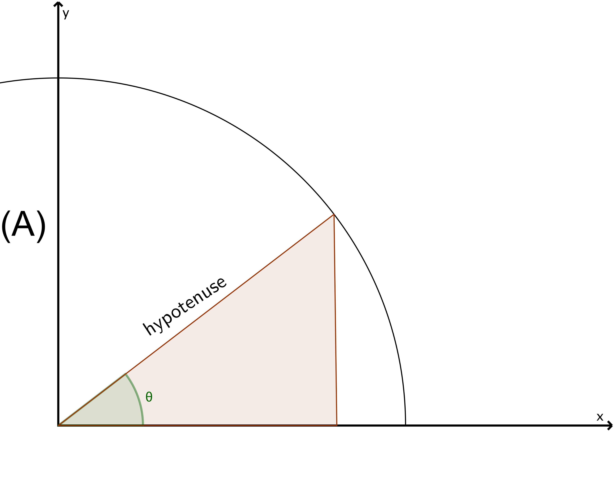

A part of a circle centered at the origin with radius \(r = 7 \text { cm}\) is given in the figure (A) below. A right triangle is formed in the first quadrant (see figure (A)). One of its sides lies on the \(x\)-axis. Its hypotenuse runs from the origin to a point on the circle. The hypotenuse makes an angle \(\theta \) with the \(x\)-axis.

- (a)
- Draw 2 more examples of such a triangle in the figure (B).
- (b)
- Express the area of such a triangle as a function of \(\theta \) and state its domain.
- (c)
- Find the value of \(\theta \) which maximizes the area in part (b). Show your work and justify your answer. [2]